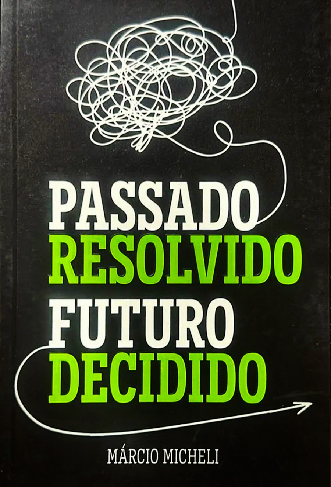
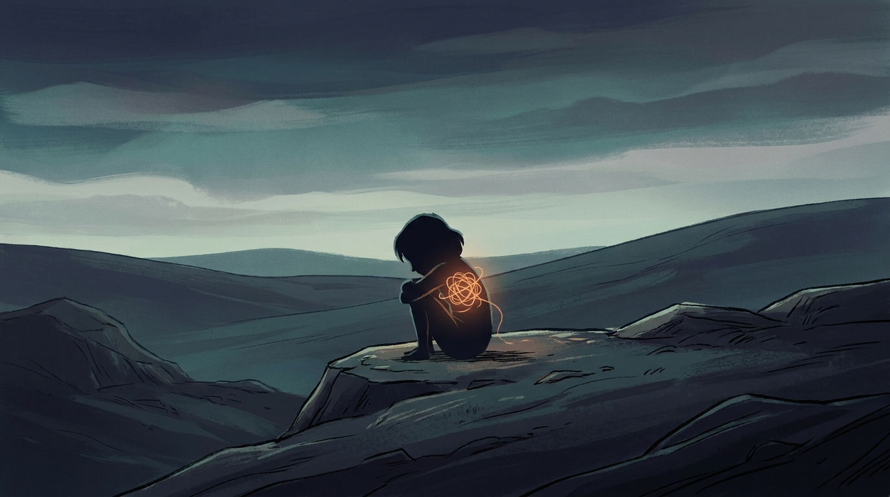
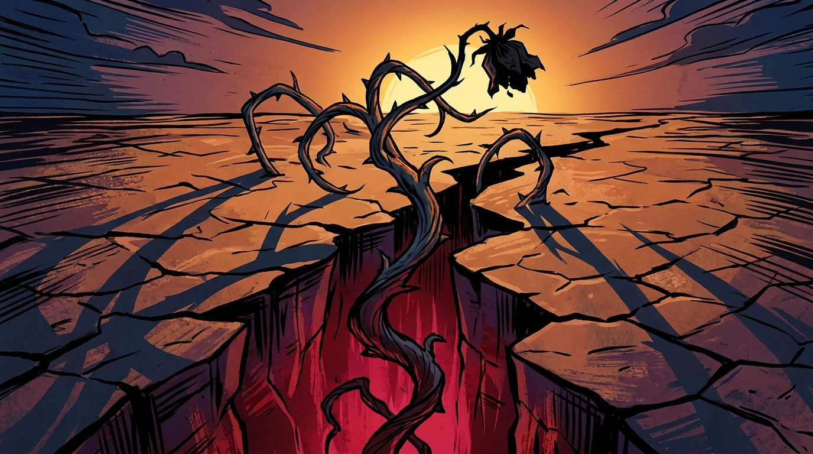
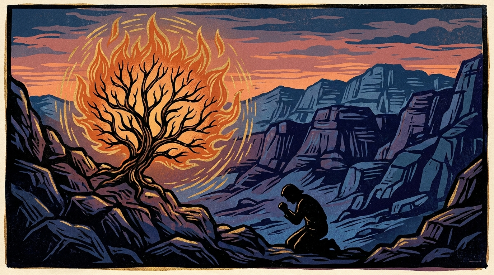
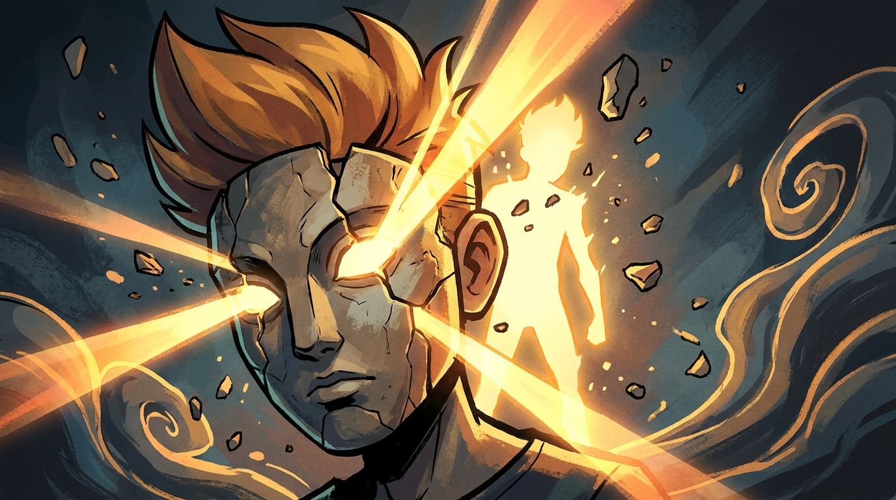
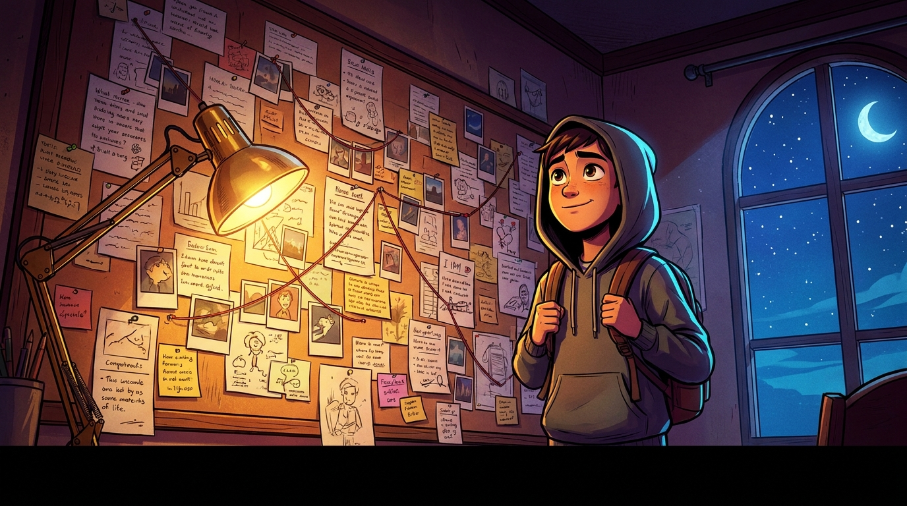
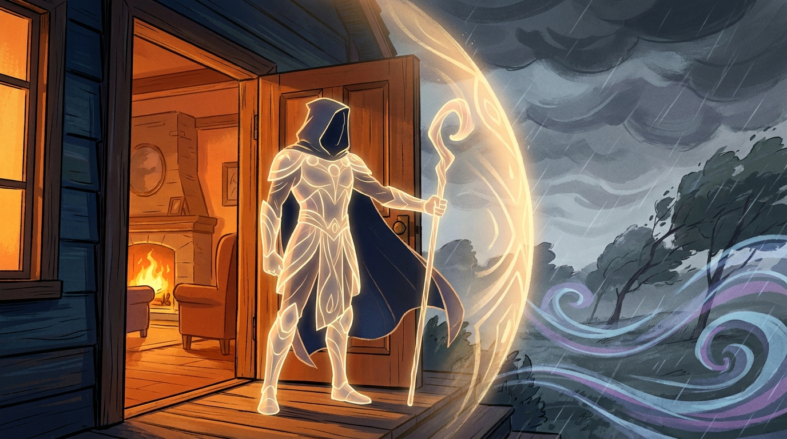
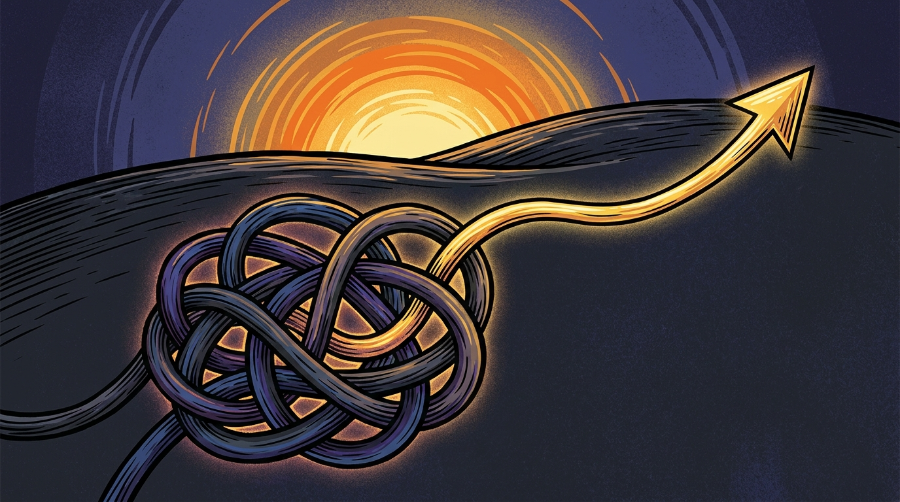

Existe uma dor que os exames não encontram. Não é a dor do corpo, é a dor da alma: aquilo que incomoda por dentro e quase nunca conseguimos colocar em palavras. Um medo sem motivo aparente, uma frase que pesou mais do que deveria, uma reação forte demais para uma situação pequena. Quando essa dor não é tratada, ela não some sozinha. Ela vira raiz de escolha errada.
Este livro nasce do trabalho de Márcio Micheli sobre ressignificação: a ideia de que não é possível apagar o que aconteceu, mas é possível decidir o sentido que aquilo carrega daqui pra frente. Cada capítulo caminha por um pedaço desse processo, da dor que ainda não tem nome até a ação concreta que a transforma.
Este resumo condensa os oito eixos centrais do material original e devolve, ao final de cada capítulo, uma declaração pensada para ser dita, não só lida. Cada uma vem acompanhada de uma imagem original, construída ao redor da mesma ideia central do capítulo.
Existem dores fáceis de apontar: um osso quebrado tem radiografia, uma febre tem termômetro. A dor da alma não tem esse privilégio. Ela mora num lugar que a medicina não fotografa e que a própria pessoa, na maioria das vezes, mal consegue descrever. Como explicar uma sensação de angústia? Como traduzir em palavras um desânimo que não tem data pra começar?
Essa dificuldade de nomear é parte do problema. Uma pessoa adulta só é ferida em suas emoções se permitir que isso aconteça, e essa permissão quase nunca é consciente: ela nasce da falta de habilidade emocional pra blindar a mente contra estímulos que reabrem dor antiga ou projetam medo de um futuro que ainda nem chegou. Sem esse discernimento, qualquer companhia próxima também vira variável: más companhias corrompem os bons costumes, escreveu Paulo aos coríntios, e corrompem antes de tudo a percepção. Sua percepção nasce da sua história, e mudar de percepção sem reescrever a história por trás dela é pedir a um espelho que mostre outra coisa.
Duas frentes que constroem o hoje
a lembrança que, sem tratamento, decide como você reage.
a projeção de medo que, sem tratamento, decide o que você evita.

Toda autossabotagem tem uma raiz, e essa raiz quase sempre começa do mesmo jeito: um evento de injustiça gera dor. Quando essa dor é guardada em vez de tratada, ela vira ressentimento. O ressentimento, cedo ou tarde, gera reclamação, e a reclamação constrói uma identidade de vítima. É essa identidade que produz o fruto mais amargo do ciclo: a certeza de que você não merece nada de bom.
Quem carrega essa certeza guarda os melhores recursos para os outros e não consegue se divertir, porque se acha um privilegiado num mundo que, aos seus olhos, não faz sentido. E tudo isso, na maioria das vezes, acontece sem que a pessoa perceba. O resultado final tem um nome preciso: autossabotagem. Você não para de fazer as coisas, só passa a tomar as decisões erradas e perder o timing das oportunidades certas. Sabe o que precisa ser feito, mas não consegue executar, porque saber pede habilidade cognitiva e agir pede habilidade emocional, e é justamente essa segunda habilidade que o evento de injustiça, lá atrás, impediu de se desenvolver.
Da raiz ao fruto
evento de injustiça que gera dor não tratada.
dor guardada que endurece em ressentimento.
ressentimento que floresce em reclamação e vitimização.
a crença de que você não merece nada de bom.

Suas melhores escolhas só aparecem quando sua identidade está revelada, e revelar identidade custa passar antes por uma libertação: livrar-se de dores emocionais que talvez você nem soubesse que existiam, mas que hoje seguem te impedindo de ser quem você nasceu para ser. Jesus prometeu que a verdade liberta. Ele nunca prometeu que ela seria confortável no caminho.
Antes de libertar, a verdade tende a causar constrangimento, e é exatamente esse desconforto que aumenta o nível de comprometimento com uma vida melhor. Quando a verdade é finalmente revelada ou confessada, a primeira sensação é de um constrangimento grande, e só depois vem a libertação: a chance de recomeçar para quem, até ali, se sentia preso nas próprias escolhas erradas. Sem esse constrangimento, nenhum comportamento muda de verdade. Ele não é o obstáculo do processo, é a porta de entrada dele.
A sequência que ninguém pula
o desconforto de ver a verdade sobre si mesmo.
a decisão de mudar que esse desconforto produz.
a identidade recuperada do outro lado da mudança.

Nada muda no que você faz se nada muda no que você pensa, sente e, a partir disso, decide. Repetir uma ação constrói um hábito, e o hábito, pra bem ou pra mal, entra em looping: pensamento gera sentimento, sentimento gera ação, ação repetida vira hábito, hábito consolidado vira atitude que tenta justificar o pensamento que deu início a tudo. Mudar de verdade significa entrar nesse ciclo pela raiz, não pela ponta.
Um dos obstáculos mais comuns nessa hora é a busca por um "lugar de segurança": aquele padrão antigo, mesmo ruim, que o inconsciente insiste em justificar como positivo só para manter você onde já está. O ser humano é motivado, principalmente, por dor ou por prazer, e o cérebro é hábil em disfarçar permanência de conforto. A essência da mudança está na informação nova: novas experiências, novas observações, novas associações. Sem informação nova, a mente não tem motivo pra sair do lugar.
O ciclo que decide seu comportamento
o que você pensa gera o que você sente.
o que você sente repetido vira comportamento fixo.

Muita gente trata destino como o lugar que lhe foi dado. Não é. Destino é o lugar aonde você decide chegar, e ser verdadeiramente livre não é apenas ter o poder de escolher, é fazer as escolhas certas. Ressignificar é exatamente isso: viver, na mesma área que causou a dor, uma nova experiência carregada de impacto emocional suficiente pra plantar ali uma informação diferente da anterior.
Esse processo tem uma ordem prática. Primeiro, encontrar a experiência que precisa ser ressignificada, porque enfrentar um problema começa por conhecê-lo. Depois, identificar a área de alavanca: aquela capaz de melhorar várias outras áreas da vida se a satisfação com ela também melhorar. Por fim, agir, e essa ação tem quatro características que não têm exceção: é sempre simples, nunca procura culpados, depende só de você e não exige que ninguém mais mude primeiro.
Os três passos para ressignificar
a experiência específica que ainda pesa.
a área de alavanca onde essa experiência mora.
simples, sem culpados, dependendo só de você.
Saber aonde se quer chegar é um exercício de foco, e foco é a capacidade que o cérebro tem de bloquear estímulos que não servem ao propósito daquele momento. Um dos maiores segredos para manter esse foco é simplesmente diminuir a importância das distrações. Se o alvo é Deus, família e crescimento pessoal e profissional, qualquer coisa além disso é distração, e reduzir a importância dela já é meio caminho andado.
É aqui que entra o mural dos sonhos: um espaço, físico ou visual, onde fica registrado aonde você quer chegar, olhado todo dia de manhã e antes de dormir, até fixar na memória o comportamento baseado nas emoções que essa lembrança gera. Antes de começar a limpar a casa é preciso fechá-la: limpar é ressignificar eventos passados, casa é mente, fechar é não deixar entrar estímulo novo que vá tirar seu foco ou criar outro evento de injustiça. Ao atingir os sonhos escritos, o corpo libera a recompensa que fecha o ciclo: uma sensação real de conquista, que reduz a chance de ansiedade e depressão.
Pra que serve o mural
criar sentido, fé e esperança de forma visível.
convicção reforçada todo dia, de manhã e à noite.

A partir do dia em que você decide blindar sua mente, é normal ser visto como alguém que "ficou chato", principalmente por quem conheceu sua versão antiga e não sabe reconhecer esse crescimento. Você deixa de ser aquela pessoa que quer agradar todo mundo, e é justamente aí que a vida começa a mudar de verdade: quem tenta agradar todos acaba não servindo a ninguém, nem a si mesmo.
Blindar o coração, no sentido de Provérbios, é decisão prática, não sentimento vago. Definir metas com clareza, sem esperar que alguém faça por você. Parar de reclamar e parar de dar ouvidos a quem só reclama. Saber administrar problema sem inflar drama. Parar de dar explicação onde não é devida. Sair de perto de quem tem princípios e valores diferentes dos seus, e cultivar poucos amigos, mas íntimos de verdade. Nenhuma dessas chaves depende de mudar o mundo ao redor. Todas dependem só de você virar a própria chave.
Quatro das oito chaves
ter uma visão de futuro clara, sem depender de opinião alheia.
e parar de alimentar quem só reclama perto de você.
sem transformar cada um deles em crise permanente.
cercar-se de quem soma, mesmo que sejam poucos.

Existe uma diferença entre esquecer o que aconteceu e deixar de ser governado por aquilo. Deus, por meio de Isaías, não promete apagar a memória do povo, promete fazer uma coisa nova diante dela. É essa a promessa que este livro inteiro tenta traduzir em passos práticos: o passado não precisa sumir para ser resolvido, precisa ser ressignificado.
Um risco permanece mesmo depois da mudança começar: a latência, o hábito antigo que, mesmo substituído, fica adormecido dentro de você. A solução não é ingenuidade, é supervisão: evitar de forma consciente os ambientes, situações e relacionamentos que fariam você considerar de novo aquele hábito como possível. Ouse sonhar, atreva-se a realizar, e entenda que mudança de verdade costuma ser gradativa, não instantânea. O convite final é simples de escrever e exige uma vida inteira pra sustentar: resolver o passado, decisão por decisão, para decidir de fato o futuro.
Depois da mudança começar
latência: o hábito antigo que fica adormecido, não morto.
supervisionar e evitar o ambiente que reativa esse hábito.

Ninguém decide o que aconteceu. Todo mundo decide o que aquilo vai significar. Essa é a distância inteira entre carregar o passado e ressignificar o passado: a primeira opção repete, a segunda conclui.
Ressignificar não é fingir que a dor não existiu, nem terceirizar a responsabilidade pra quem causou o evento de injustiça. É encontrar a experiência que ainda pesa, identificar a área de alavanca onde ela mora, e agir: de um jeito simples, sem procurar culpados, dependendo só de você, sem esperar que o outro mude primeiro.
A promessa deste livro nunca foi uma vida sem dor. Foi uma vida onde a dor para de escrever o roteiro. O passado aconteceu. O futuro ainda está em aberto, e a caneta está na sua mão.
Os oito eixos, em uma frase cada